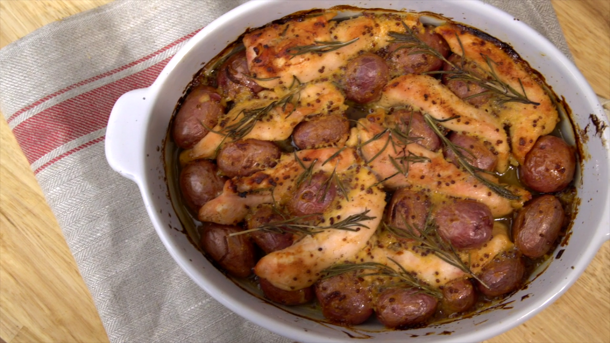

Tomás receptjei
Csirke

Hozzávalók 4 személyre
- 500g csirkemell csík
- 30 kis burgonya
- 3 evőkanál mustár Dijon
- 3 evőkanál méz
- 2 evőkanál teljes grain mustár
- 2 evőkanál sózatlan vaj
- 1/4 hagyma kis darabokban
- Rengeteg rozmarin
- Só, bors és olívaolaj
Elkészítés
- Egy serpenyőben, olvad a vajat olívaolajrol.
- Tegye a burgonyat és főzzük 5 percig.
- Után, süt a hagyma együtt.
- Míg a hagyma és a burgonya sütik, szezonáljuk a csirkét sóval és borssal